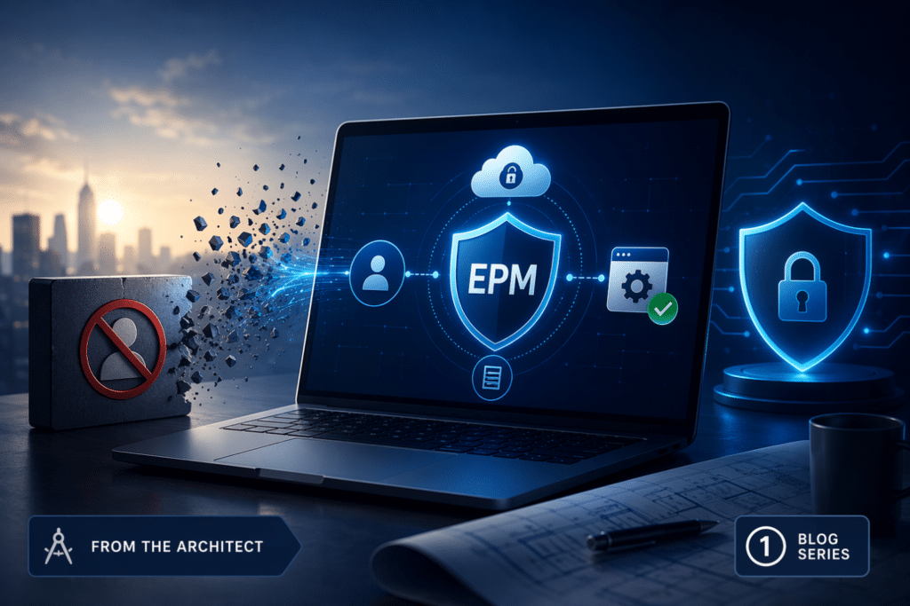
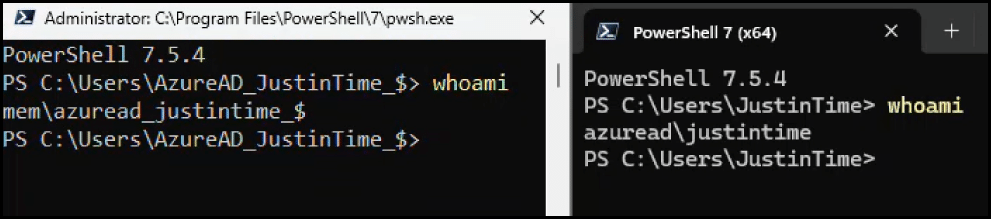
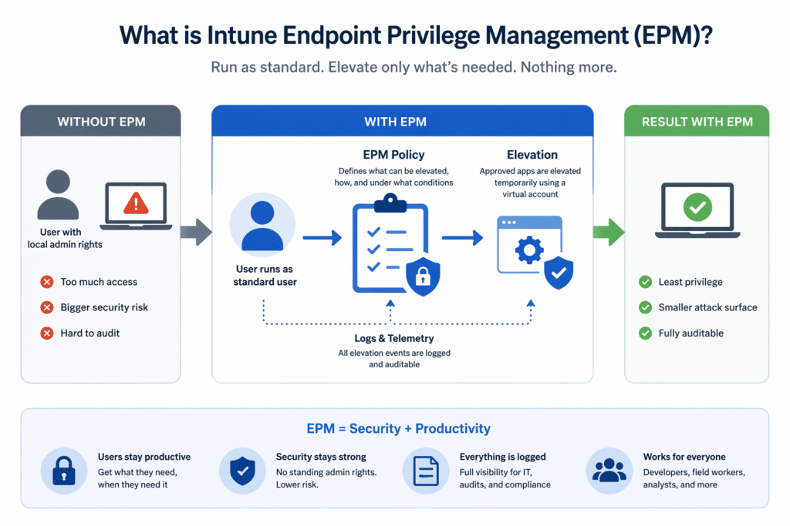

This blog post is the first in a series on Microsoft Intune Endpoint Privilege Management. This is not a Microsoft doc, but a series about how EPM will work in real life.
The Scenario Every IT Pro Recognizes
It’s a Tuesday afternoon. A developer sends a message in Teams:
“Hey, I need to install a tool to finish this sprint. Can you give me admin rights real quick?”
You know this conversation. You’ve had it hundreds of times. And every time, you’re stuck choosing between two options that both feel wrong:
Option A: Log a helpdesk ticket, wait for approval, remote in, install it yourself. Thirty minutes of friction for a two-minute task. The developer misses their deadline, and your helpdesk queue grows by one more entry.
Option B: Grant them local admin rights. Fast, easy and a security nightmare that IT leadership will eventually ask you to explain during the next audit.
This is not a new problem. It is arguably the oldest unsolved problem in endpoint management. And for years, the answer has been an uncomfortable compromise: organizations either lock everything down and strangle productivity, or they hand out local admin rights like candy and hope nothing bad happens. 🫣🤞
Both approaches are wrong, and as architects, we want to show you exactly how Microsoft Intune Endpoint Privilege Management gives you a third path. One that was previously only possible with expensive third-party tooling, and that, as of July 1, 2026, is part of your existing Microsoft 365 license.

Why This Actually Matters – The Architectural View
Before we talk about how Intune Endpoint Privilege Management works, let’s be honest about why the local admin problem is so persistent.
The reason organizations default to granting local admin rights is simple: they need to keep people productive. But the security and compliance cost of doing so is significant:
- Attack surface expansion. Local admin rights are one of the most exploited vectors in modern attacks. When a user with local admin rights runs a malicious attachment, the malware inherits those rights. Full stop.
- Zero Trust violation. The principle of least privilege – one of the foundational pillars of a Zero Trust architecture – is immediately broken the moment you give a user more rights than they need for their daily work.
- Audit and compliance gaps. When you grant local admin rights, you lose visibility. You no longer know what was installed, what was elevated, or when. During an incident investigation or a compliance audit, that blind spot is costly.
- Helpdesk overload. If you go the other direction and lock everything down, you trade the security risk for a different operational cost: a helpdesk team buried in elevation requests for tasks that should be self-service.
The architecture problem is that there has never been a clean middle ground that works at scale without additional tooling. Until now.
What Intune Endpoint Privilege Management Is
Microsoft Intune Endpoint Privilege Management (EPM) lets your users run as standard users – no local admin rights – while still being able to perform specific tasks that require elevation. IT defines exactly what can be elevated, under what conditions, and with what level of approval. Everything is logged.
Here is the key architectural distinction that makes EPM different from simply granting local admin rights: elevations are temporary and isolated. EPM uses a virtual account to perform elevations, which is completely isolated from the logged-on user’s account. Neither account is added to the local administrators group. The user gets the elevation they need, the task completes, and then the elevated context is gone. No permanent privilege. No residual access.
Architect’s note know this before you build your rules: The virtual account isolation is a security strength, but it comes with a practical gotcha you need to plan for. Because the elevation runs under a separate virtual account, anything written to the HKCU registry hive or the user’s library folders during the elevated process ends up in the virtual account’s profile, not the logged-on user’s. This means software that writes per-user configuration or data during installation may appear to install successfully, but behave incorrectly or fail to launch for the user afterward. We will cover how to identify which applications hit this pattern and how to handle it – including when to use the Elevate as current user elevation type instead – later in this post.
The Three Elevation Models
EPM gives you three ways to handle elevation requests, and you will likely use all three depending on the user persona:
1. Automatic elevation
The application is elevated silently, without any user interaction. This is appropriate for known, trusted tools – a deployment script that needs to write to a protected registry key, for example. The user never even sees it happen.
2. User-initiated elevation with confirmation
The user right-clicks the application and selects “Run with elevated access.” They may be prompted to provide a business justification, which is logged. This is ideal for less frequent tasks where you want a light audit trail – installing a driver update, running a diagnostic tool.
3. Support-approved elevation
The user submits an elevation request, and it is routed to IT for approval before it can proceed. This is appropriate for higher-risk applications or in environments with strict compliance requirements.
Three Real-World Scenarios
Scenario 1: The Developer (Enterprise / SMB)
The problem: A developer needs to install and update development tools regularly – Node.js, package managers, SDKs, local database tools. These installers require elevation. In a locked-down environment, every install becomes a helpdesk ticket.
How EPM solves it: IT creates an elevation rule for the approved installer, signed by a known certificate. When the developer runs the installer, EPM automatically elevates it. The developer sees no friction. IT retains full visibility. The helpdesk ticket never gets created.
The outcome: Developer productivity is preserved. The endpoint stays in a standard user configuration. The elevation event is logged with a timestamp, file hash, and user context, making it fully auditable.
Architect’s perspective when EPM alone is not enough for developers:
EPM works for developers. But we want to be honest about something: developers are the hardest user persona to support with EPM, and in many environments they may warrant a different architectural approach entirely.
The challenge is not technical, it is operational. Developer tooling is broad, constantly changing, and deeply varied across teams. One developer needs Python and a local Postgres instance. Another needs Docker, a specific kernel driver, and a build tool that ships its own package manager. Keeping EPM elevation rules current with that kind of diversity requires ongoing maintenance that many IT teams simply do not have capacity for. And when a rule is missing, the developer is blocked – which drives exactly the kind of shadow IT and workaround behaviour you are trying to eliminate.
More importantly, developers represent a fundamentally different risk profile compared to standard users. A compromised developer workstation is not just a compromised endpoint. It is potential access to source code repositories, CI/CD pipelines, cloud credentials, deployment keys, and production infrastructure. From an attacker’s perspective, a developer machine is one of the highest-value targets in the organisation. Treating it the same as a standard user device – just with tighter elevation policies – underestimates that risk.
The architectural ideal: device segmentation
The more mature approach is to stop trying to make the developer device fit the standard management model, and instead architect around the risk deliberately. This means treating developer devices as privileged access workstations – separated from the rest of the environment rather than simply more tightly controlled within it.
In practice, this often means a two-device model:
- The developer workstation is where development happens. It may have broad local rights, developer-controlled tooling, and relatively few restrictions – because the developer genuinely needs that freedom to do their job. But it is architecturally isolated. It has no access to production systems beyond what is explicitly required, no access to sensitive organisational data, and no standard collaboration tools. If it is compromised, the blast radius is contained to the development environment.
- The productivity device is where the developer communicates, collaborates, and accesses organisational systems – email, Teams, SharePoint, HR systems. This device is managed exactly like any other standard user device, with EPM policies in place and no local admin rights. It is no different from what a finance user or operations manager would have.
The security logic here is important: you are not relaxing security by giving developers a less-restricted machine. You are improving it by containing what an attacker can reach if that machine is compromised. The developer workstation being breached no longer means access to the organization’s communication, data, or identity infrastructure – because those never lived on that device.
Developers still need to collaborate and communicate, which is exactly why the productivity device exists. They are not isolated from the organisation – they are isolated from it on the device where the risk is highest.
When this is not practical
Not every organization can operationally support two devices per developer. For smaller organizations, cost and logistics are real constraints. In those cases, EPM with carefully built, persona-specific elevation rules is a meaningful improvement over the status quo – and it is absolutely the right starting point. But if your organization is scaling its security maturity or your developers have access to production systems and sensitive pipelines, the two-device model is worth adding to the roadmap. It is the architectural decision that removes the compromise rather than managing it. Keep in mind, this doesn’t have to mean two physical devices – you could equip them with Windows 365 Cloud PCs.
Scenario 2: The Field Operations Worker (Enterprise / Government)
The problem: A field engineer working remotely needs to modify network settings to connect to a client VPN. On a locked-down machine, this requires either a helpdesk call, creative scripting, or standing admin rights. Neither is practical in the field.
How EPM solves it: IT creates an elevation rule for the specific network configuration utility. The engineer right-clicks, selects elevated access, enters a brief justification, and completes the task. The IT team can see the event in the Intune admin center and correlate it with their SIEM if needed.
The outcome: The field engineer is unblocked. The endpoint was never compromised. The action is fully auditable – critical in regulated industries and government environments where every privileged action must be traceable.
Scenario 3: The Long-Tail Software Request (All Segments)
The problem: IT packages and deploys the tools that most users need. But every organization has a long tail of software that only a handful of people require – a niche data visualization tool used by two analysts, a vendor-specific diagnostic utility needed by one person in procurement, a free PDF tool a team lead has used for years. These will never make it into the standard application catalog. The ROI of packaging, testing, and maintaining a deployment for two users simply is not there.
Without EPM, these requests end up as helpdesk tickets. IT either spends time on low-value installs one by one, or the user gives up and finds a workaround, which usually involves someone granting them temporary local admin rights and hoping they remember to remove it.
How Intune Endpoint Privilege Management solves it: Rather than packaging every niche tool, IT creates an elevation rule for the specific installer – matched by file hash and certificate – and assigns it to the relevant user or group. The user can install the tool themselves, without a helpdesk ticket and without ever holding local admin rights on their device. The elevation is logged, audited, and scoped to that exact binary. Nothing else is elevated. Nothing else changes.
For tools that are not yet known or approved, the support-approved elevation workflow handles the grey area: the user requests elevation, provides a business justification, and IT approves or denies it. If the same tool gets requested repeatedly, that is a signal to formalize it as a rule, or package it properly if adoption has grown enough to warrant it.
The outcome: The helpdesk queue shrinks. Users are unblocked without IT having to touch their devices. The organization retains full visibility into what was installed, by whom, and when. And no one had to make the uncomfortable choice between productivity and security.
The Virtual Account Gotcha – And How to Handle It
Earlier, we described how EPM uses a virtual account to perform elevations in isolation from the logged-on user.

That isolation is genuinely valuable from a security standpoint – it means the elevated process cannot reach the user’s personal data, credentials, or browser session. But it comes with a real-world catch that will bite you if you don’t plan for it.
What Goes Wrong
When an installer or application runs under the virtual account, Windows resolves all user-context paths – HKCU in the registry, %APPDATA%, %LOCALAPPDATA%, %USERPROFILE%\Documents, and similar locations – relative to the virtual account’s profile, not the logged-on user’s.
This means that anything written to the HKCU registry hive or the user’s library folders during the elevated process ends up in the virtual account’s profile. The moment the elevation ends, that profile context is gone. The next time the user opens the application, it looks for its per-user configuration in the real user’s profile – and finds nothing. It behaves as if it was never configured, or in some cases, refuses to launch at all.
How to Spot the Pattern
The symptoms are easy to misread if you don’t know what you’re looking for:
- The installation completes without errors, but the application will not launch for the user
- First-run configuration wizards re-appear every time the application is opened
- Application settings do not persist between sessions
- Shortcuts created during installation point to paths that do not exist under the user’s profile
- The application works fine when tested by someone with standing local admin rights (because their HKCU is the real user’s HKCU)
The last point is the one that catches teams out during testing. If your test account has local admin rights, the virtual account isolation never applies, and your test passes cleanly. The problem only surfaces when a standard user runs the EPM-elevated installer.
The applications most likely to hit this pattern are older Win32 installers that were designed before per-machine vs. per-user installation was a meaningful distinction, client-server applications that write connection configuration into the user profile during setup, and tools that store licence data or activation state in HKCU rather than HKLM.
The Solution: Elevate as Current User
Microsoft addressed this directly in the October 2025 update to Intune Endpoint Privilege Management, introducing a fifth elevation type: Elevate as current user.
Instead of running the elevated process under the virtual account, this elevation type runs it under the signed-in user’s own account, with elevated privileges added. The user’s profile paths, environment variables, HKCU registry hive, and personalized settings are all intact and accessible throughout the elevation. The process runs as the user, just with the rights it needs.
There is an additional benefit worth noting for hybrid environments: because the elevation runs in the user’s own context, it inherits the user’s Kerberos tickets. This matters for applications that need to reach network resources – a line-of-business application launched from a network share, or a client-server installer that needs to authenticate to the server during setup – scenarios where the virtual account would have no network identity at all.
The Trade-Off and When to Use Each
This is the decision you need to make deliberately in your elevation rules, not by default:
|
Scenario |
Recommended elevation type |
|---|---|
|
Installs to |
Virtual account |
|
Drivers, system utilities, scripts modifying system state |
Virtual account |
|
Installers that write to |
Elevate as the current user |
|
Applications launched from a network share |
Elevate as the current user |
|
Client-server apps that authenticate during installation |
Elevate as the current user |
|
Anything where you are uncertain |
Start with a virtual account, |
The security posture of the virtual account is stronger – the elevated process is more isolated, and the audit trail clearly distinguishes the virtual account’s actions from the user’s. Elevate as current user increases the exposure surface because the elevated process runs with the full user identity. Use it where it is genuinely needed, and treat it as the exception rather than the default.
In practice, the audit data from your Phase 1 deployment will tell you a lot. If you see elevation events completing successfully but users reporting that applications are not working correctly afterward, the virtual account profile collision is almost certainly the cause. That is your signal to review the rule and switch to Elevate as current user for that specific application.
The Architecture: How EPM is built
For those who want to understand what is happening under the hood, here is the practical architecture of Intune Endpoint Privilege Management.
Two Policy Types
Intune Endpoint Privilege Management is configured through two types of policies in the Microsoft Intune admin center:
- Elevation Settings Policy – controls how the EPM client behaves on the device: whether elevation is enabled, what the default behavior is, and what level of reporting is collected.
- Elevation Rules Policy – defines what gets elevated and how. Rules are built on one or more detection attributes: file name, file path, file hash, product version, and certificate signature. You can also control child process behavior, meaning you can specify what subprocesses an elevated application is allowed to spawn.
The recommended deployment approach
If there is one architectural recommendation we would give to anyone starting with Intune Endpoint Privilege Management, it is this: do not start by removing local admin rights. Start by listening.
The recommended deployment follows two phases before you ever touch a single user’s admin rights:
Phase 1 – Audit. Enable the EPM client in reporting mode. Collect elevation data across your environment. Let the agent observe what is actually being elevated, by whom, and how often. The EPM Overview Dashboard in the Intune admin center aggregates this data, showing you your top elevated applications, devices with local admin accounts, and the full landscape of managed vs. unmanaged elevations.
Phase 2 – Persona mapping. Use the audit data to identify groups of users with common elevation needs. A developer cohort. An IT operations team. Finance users who run a legacy reconciliation tool. Build your elevation rules around these personas before you remove any admin rights.
Only after Phases 1 and 2 are complete should you begin transitioning users from local administrators to standard users, with confidence that your rules cover their actual workflows.
Integration with Your Security Stack
Intune Endpoint Privilege Management integrates directly with Microsoft Defender for Endpoint. If you have Defender integrated, elevation events are available in Advanced Hunting, enabling your SOC to correlate privilege-escalation events with broader threat signals. You can also forward EPM logs to your SIEM for centralized visibility across your environment.
Licensing: What Changes on July 1, 2026
This is where the conversation gets important for budget owners and architects planning for the next 12 months.
Intune Endpoint Privilege Management has historically required the Microsoft Intune Suite as a paid add-on, approximately $10 per user per month on top of your base Microsoft 365 license. For many organizations, that cost was the primary reason EPM never made it past the proof-of-concept stage.
That changes on July 1, 2026.
What is included in each license tier
Microsoft 365 E3 will include:
- Intune Remote Help
- Microsoft Intune Advanced Analytics
- Intune Plan 2 capabilities
Microsoft 365 E5 will include everything in E3, plus:
- Intune Endpoint Privilege Management
- Microsoft Cloud PKI
- Intune Enterprise Application Management
- Microsoft Security Copilot
The Rollout Timeline
- Pricing changes take effect July 1, 2026
- Feature rollout for eligible tenants begins in CY26 Q3 and completes by August 1, 2026
- No customer action is required – capabilities are added automatically
- Tenants receive 30 days’ notice in the Message Center before the update becomes available in their tenant
- Standalone Microsoft Intune Suite and individual add-ons remain available for organizations not on E3/E5
What This Means Architecturally
If your organization is on Microsoft 365 E5, you will have access to Intune Endpoint Privilege Management as part of your existing license by August 2026. The business case for deploying it is straightforward:
- Replace third-party tooling. Many organizations are currently paying for separate endpoint privilege management products. Those costs can be eliminated.
- Strengthen your Zero Trust posture without new procurement cycles.
- Consolidate your management plane – EPM is managed from the same Intune admin center you are already using for device compliance, configuration profiles, and app protection policies.
The price increase for Microsoft 365 E5 – from $57 to $60 per user per month – reflects the addition of these capabilities. For most organizations, the value of eliminating the Intune Suite add-on alone offsets the increase.
Where to Start
If you are an architect or IT lead reading this and thinking about how to move forward, here is the practical sequence we recommend:
- Verify your license tier. Confirm whether your organization is on Microsoft 365 E3 or E5, and check the Microsoft 365 Message Center for your rollout notification.
- Enable EPM in audit mode first. Deploy the Elevation Settings Policy in reporting-only mode. Give it two to four weeks to collect data across your endpoint estate.
- Review the EPM Overview Dashboard. Identify your top elevated applications and the users running them. This is your rule backlog.
- Build elevation rules before removing admin rights. Target the top 10-15 applications that account for the majority of elevation events in your environment.
- Define your user personas. Segment your users by role and elevation need. Different personas get different elevation policies – automatic for well-understood developer tools, user-initiated for less frequent tasks, support-approved for high-risk applications.
- Begin the transition. Use the Local Users and Groups configuration in Intune to start removing users from the local administrators group, cohort by cohort, starting with your lowest-risk user segments.
- Monitor and adjust. Use the EPM reports in the Intune admin center to track elevation trends. Forward events to your SIEM for full visibility.
Closing Thoughts
The local admin problem has never been a technical problem. It has always been an organizational one – a tension between security and productivity that most tools forced you to resolve in favor of one or the other.
Intune Endpoint Privilege Management resolves that tension. Standard users stay productive. IT retains control. Every elevation is logged and auditable. As of July 1, 2026, if your organization is on Microsoft 365 E5, this capability is already included in your license.
The question is no longer whether you can afford to deploy it. The question is how quickly you can get started.

FAQ
What problem does Intune Endpoint Privilege Management actually solve?
EPM solves the long-standing trade-off between productivity and security by allowing users to run as standard users while still performing specific privileged tasks without needing full local admin rights.
How is EPM different from simply granting local admin rights?
Unlike local admin access, EPM provides temporary, scoped elevations that are isolated and fully audited, meaning no permanent privilege and no residual access after the task is complete.
What are the different elevation types in EPM?
EPM supports three core models:
– Automatic elevation (silent)
– User-initiated elevation (with justification)
– Support-approved elevation
These allow you to align privilege elevation with user personas and risk levels.
When should I use “Elevate as current user”?
Use virtual account for system-level changes (more secure, isolated)
Use current user when applications depend on user context (e.g., HKCU or user profile paths)
Choosing incorrectly may result in apps installing but not working for the user.
Why do some applications fail after being installed with EPM?
Some installers write configuration data to user-specific locations (HKCU, AppData).
When using the virtual account, this data ends up in a temporary profile, causing apps to fail or reset after launch.
Should I remove local admin rights before deploying EPM?
No, start with EPM audit mode first.
Use collected data to understand real elevation patterns, then build policies before removing admin rights.
How do I decide what elevation rules to create?
Use audit data to:
– Identify frequently elevated apps
– Group users into personas (e.g., developers, finance, field workers)
– Build rules that match real-world usage—not assumptions
Is EPM enough for developer workstations?
Not always.
Developers often have highly dynamic tooling needs, making rule maintenance challenging.
For higher maturity environments, a segmented or two-device model may be a better long-term approach for developers.
How does EPM improve security in a Zero Trust architecture?
EPM enforces least privilege by ensuring users only receive elevation when needed, reducing the attack surface and maintaining the auditability of all privileged actions.
What changes with licensing after July 1, 2026?
EPM is included in Microsoft 365 E5, removing the need for a separate Intune Suite add-on and making it easier to justify deployment from both technical and financial perspectives.